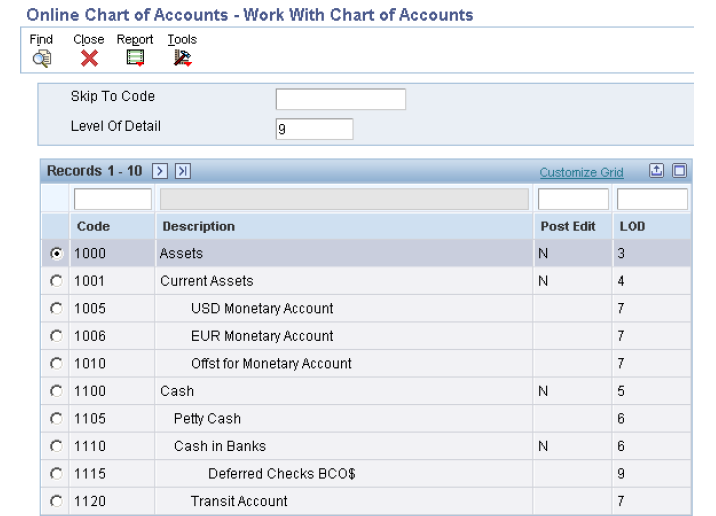
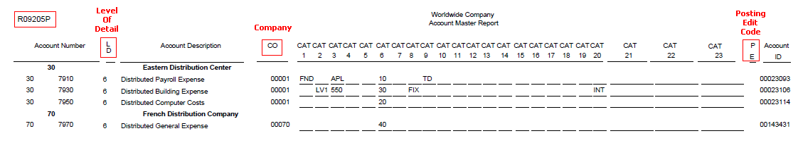
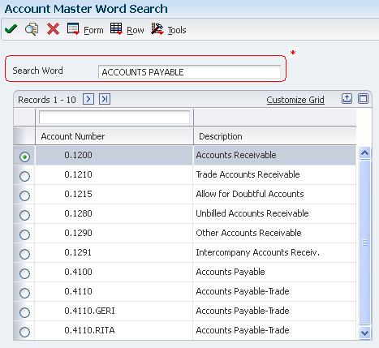

Business Unit.Object.Subsidiary Format
The EnterpriseOne system commonly uses the Business Unit.Object.Subsidiary format for account numbers. You can use periods, commas, or other user-defined symbols to separate the components of the account number. The period (.) separator is the default as per General Accounting Constants. Following diagram shows the format requirements:
Business Unit - The Where
- The business unit describes where in your organization the transaction will have an impact.
- It represents the lowest organizational level within your business where you record all revenues, expenses, assets, liabilities, and equities.
- A business unit can be a department, branch office, truck, and so on.
Object.Subsidiary - The What
The Object.Subsidiary represents what type of transaction is being created, such as rent or supplies expense and sales revenue. Following characteristics apply to the Object.Subsidiary:
| Object | Subsidiary |
|---|---|
| An Object is a description of the transaction. | A Subsidiary is an expanded description of the object account. |
| An Object account is a required field for transaction entry. | A Subsidiary is an optional part of the account and also optional for the transaction entry. |
| An Object can be up to six alphanumeric characters, depending on your organization's setup. | Subsidiary can be up to eight alphanumeric characters with no spaces. |
| All Object accounts must be of the same length. | The length of Subsidiary can vary within chart of accounts. |
| To make data entry easier and faster, you might want to use only numbers for the object account. | Use the Subsidiary when you need detailed accounting activity for an object account. |
Example
The following example shows how you can associate the object account 1110 for Cash in Bank with several subsidiary accounts:
- 1110.BEAR (Bear Creek National Bank)
- 1110.FIB (First Interstate Bank)
- 1110.FRANCE (First Bank of France)
- 1110.LONDON (First Bank of London)
Account Category Codes 01-43
You assign category codes to accounts to expand your reporting capabilities and group your accounts for reporting purposes. You use category codes 01-43 (UDC 09/01 - 09/43) for accounts in the same way that you use category codes for business units. The category codes 09/01 - 09/20 are 3 characters in length, whereas category codes 09/21 - 09/43 are 10 characters in length.
The 10-character category codes are useful if your business requires an alternate chart of accounts for statutory reporting. You can use the category code and the description, rather than the account number and description, on trial balance reports, the general ledger, and general journal reports. These category codes let you build summarization logic into your reports.
After you set up values for category codes 01 - 43, you assign the values to accounts in your chart of accounts. This creates a link between the accounts and the category codes and enables you to print these reports:
- Debit/Credit T/B by Cat Code (R09472).
- General Ledger by Category Code (R09470).
Other key attributes are as follows:
- You can set up a version for each of the category codes that you use and specify the category code in a processing option for the program.
- If you assign the same category code value to more than one of your accounts, the system adds the amounts in all of the accounts and prints the total amount on the report.
Example: Category Code 21
Suppose you want to print a report that shows data from all of your receivable accounts. You decide to use category code 21 (UDC 09/21) for receivable accounts and set up a value REC01 for Notes Receivable, REC02 for Interest Receivable, REC03 for Accounts Receivable, and so on. You assign these values to accounts in your chart of accounts. For example, you assign the value REC01 to category code 21 for each notes receivable account. You can then print selected reports that include all of your receivable accounts.
For this example, you would complete these steps:
- Set up values for REC01, REC02, and REC03 in UDC table 09/21.
- Use the Review and Revise Accounts program (P0901) to assign the category code values to accounts in your chart of accounts.
- For category code 21, assign the value REC01 for notes receivable accounts, REC02 for interest receivable accounts, and so on. To assign a category code, select a notes receivable account on the Work with Accounts form. On the Revise Single Account form, select the Category Codes 21 - 30 tab and enter REC01 in the Cat Code 21 field.
- Assign category code values to the remaining accounts in your chart of accounts.
- Run the report with data selection set to the Category Code 21 value and it will display the information pertaining to the desired Category Code 21.
Account Category Codes 24-43
The behavior of Account Category Codes varies from one release to another as follows:
Xe - 8.9
- In Xe, ERP8.0 and 8.9 releases, only Account Category Codes 1 - 23 were available and Category Codes 24-43 did not exist.
- The Category Codes information is stored in Account Master (F0901) file along with rest of account information.
8.10
- Category codes 24-43 were added in 8.10 release and were initially designed to use for China Localization.
- As long as the Localization Country Code is setup to 'CN' in User Profile setting, category code 24-43 field will display in the P0901.
- The latest category codes 24-43 are stored in the F0901C table, whereas the category codes 1 - 23 is stored in F0901 table.
8.11 and later releases
- In 8.11 release and subsequent, the account category codes 21 - 43 were made available in the EnterpriseOne base product.
- No country specific user profile settings are necessary to view the category codes in the P0901 application
- The latest category codes 24-43 are stored in the F0901 table along with category codes 1 - 23 and rest of account information.
- F0901C table is obsolete in 8.11 and subsequent releases.
Level of Detail (LOD)
You assign a level of detail (LOD) to each account to control how amounts are rolled up, or summarized into a balance for reporting purposes. For example, set up levels of detail (LOD) as shown in the following graphic:
Observe the following guidelines when assigning a level of detail to an account:
- Level 9 is the most detailed and Level 1 is the least detailed.
- Levels 1 and 2 are reserved for company and business unit totals.
- Levels 8 and 9 are reserved for posting accounts in the Job Cost system.
- Assign the level of detail 3 to title accounts for the balance sheet - Assets, Liabilities and Equity, Revenues and Expenses.
- Depending on whether you want the next level of accounts underlined, assign level of detail 3 or 4 to title accounts for the income statement. Title accounts include:
- Revenues
- Direct costs
- General and administrative expenses
- Other income and expenses
- Examples of the other levels are:
- 4: Current Assets, Fixed Assets, Current Liabilities, and so on.
- 5: Cash, Accounts Receivable, Inventories, Salaries, and so on.
- 6: Petty Cash, Cash in Banks, Trade Accounts Receivable, and so on.
- 7: Petty Cash - Corporate, Petty Cash - Branch, and so on.
Posting Edit Codes (PEC)
Assign a Posting Edit Code to every Object or Object.Subsidiary account in the chart of accounts. This code determines whether the account posts to the general ledger and whether it updates the Account Balances table (F0902). With Posting Edit Codes, you can designate an Object or Object.Subsidiary account as:
- Posting
- Non-posting (or title)
- Budget
- Inactive
- Machine-generated
- One that requires units.
- One that requires or does not allow for a subledger and type.
Valid values of Posting Edit Code are as follows:
| PEC Value | Description | Usage |
|---|---|---|
| Blank | Allows all posting |
|
| B | Allows post to Budget Ledger Type | Only allows posting to budget ledger types starting with 'B' or 'J'. |
| I | Inactive account |
|
| L | Subledger and Type required - Detail |
|
| M | Machine-generated transactions |
This posting edit code allows entries that were created by the system and protects the integrity of the account. The only exception is for the JX document type, see "P0911 ALLOWS ENTRY ON ACCOUNT WITH PEC=M FOR JX DOC TYPE." - P0911 ALLOWS ENTRY ON ACCOUNT WITH PEC=M FOR JX DOC TYPE. JX is hard coded and it was designed to bypass PEC=M for Monetary Account Valuation program (R09415) |
| N | Non-posting |
|
| S | Subledger and Type required - Summary |
|
| U | Unit quantity required | Unit quantities are required for all transactions. |
| X | Subledger and Type - Blank |
|
Account Flex Format Setup
The Account Flex Format Setup program (P0907) defines the structure of accounts.
Open P0907 application and select "Account Flex Format" tab to access the Account Flex Format form.

This is the default and recommended Account Flex setup.
You may also consider to customize the sequence and length of your account segments, depending on how you want your chart of accounts to look like. For instance, you may setup two segments for the Business Unit, where one of the segments appear before Object Account and the other after Subsidiary or an Object Account with 6 characters.
B, O, and S Fields
If you define multiple segments for the business unit, object, and subsidiary fields, the system concatenates them from left to right in ascending order based on their assigned sequence numbers. The resulting number is left-justified in the database field.
B (Business Unit)
- Enter X to indicate that this segment of the GL account number is stored as part of the Business Unit field (MCU) in the database.
- For flexible account numbers, you can define up to six segments and use a total of 12 characters for the business unit.
O (Object)
- Enter X to indicate that this segment of the GL account number is stored as part of the Object Account field (OBJ) in the database.
- For flexible account numbers, you can define up to three segments and use a total of six digits for the object account.
- If the object account is six digits, you should use all six digits. For example, entering 000456 is not the same as entering 456 because if you enter 456, the system enters three blank spaces to
fill a six digit object.
S (Subsidiary)
- Enter X to indicate that this segment of the GL account number is stored as part of the Subsidiary field (SUB) in the database.
- For flexible account numbers, you can define up to four segments and use a total of eight characters for the subsidiary part of the account number.
Length
Enter the length of the specific segment or element for the flexible chart of accounts format. The individual elements must be greater than zero and must not exceed:
- 12 (with separator) characters for the Business Unit.
- 6 (with separator) characters for the Object Account.
- 8 (with separator) characters for the Subsidiary account.
Defining the Chart of Accounts
The Chart of Accounts can be setup in following ways:
- Work with Accounts (P0901)
- Accounts by Business Unit (P0901)
- Copy Accounts to Business Units (P09804)
The account information is stored in the Account Master table (F0901).
Processing Options (P0901)
Security Tab
- Object
- Subsidiary
- Category Code 21 - 23
Enter a value of '1' in the corresponding field to protect the value of field(s) which contain the Legal Account information.
Work with Accounts (P0901)
Access the Revise Single Account form (P0901) to setup an account.

Budget Pattern Code
Enter a unique three-character code that identifies a seasonal pattern. The system uses this code to calculate budget amounts for an accounting period.
For example:
- DNS: Do not spread annual budget among the months. You cannot set up or change this code; it is defined as part of the system.
- Blank: Spread annual budget evenly across all months.
- ***: Represents a blank value.
- SUM (summer): Spread according to user-specified percentages.
- WIN (winter): Spread according to user-specified percentages.
Model Account/Consolidations
Enter a code that indicates consolidated account or business unit. Values are:
- Blank: Non-model business unit or account.
- M: Model business unit or account.
- C: Consolidated business unit or account. This is a program-generated (P10862) value and is not user-accessible.
Currency Code
A code that specifies the currency that the account uses. A currency code in this field designates an account as a monetary account. Monetary accounts are typically bank accounts.
For most accounts, you will want the system to accept a transaction in any currency. In these instances, do not assign a currency code. If you want an account, such as a bank account, to accept transactions in a specific currency, assign a currency code.
Adjustment Entry
Select this check box to restrict the business unit and all associated accounts to adjustment entries only. This check box allows you to post adjusting entries for journal allocations, reburdening and so on, to accounts that might otherwise be closed for regular transactions. You define the document types that qualify as adjustment entries in UDC table 09/AA. Only transactions with those document types can be posted to the account. This enables you to close an account to all transactions except adjusting entries.
Example: Assume that you set up account 5.8720 to allow adjustment entries only and you set up codes for XX (reburdening entry) and JA (journal allocations) in UDC table 09/AA. You create a journal entry (document type JE) for account 5.8720 and try to post the entry. The system will issue an error message because account 5.8720 allows adjustment entries only. If you change the document type on the entry to XX or JA, the system will post the entry, assuming all other posting criteria is met.
Account ID
A number that the system assigns to each general ledger account in the Account Master table (F0901) to uniquely identify it. It is a next number set up under "Next Account ID" for System Code - 09 (General Accounting). It is commonly referred to as the short account number and can never be changed.
Accounts by Business Unit (P0901)
This application form allows you to simultaneously enter multiple accounts for a single business unit. The grid interface also allows you to import the account information from an excel sheet.

You can access the Account by Business Unit form (P09801) in following ways:
- In Work with Business Units (P0006), select Row-Exit - Accts By BU
- In Work with Accounts (P09010, select Row-Exit - Account By BU
Model Chart of Accounts
To create a model chart of accounts, you can:
- Either create one master model business unit that includes the complete chart of accounts
- Or create a model business unit for every business unit type and assign object accounts to it.
- Depending on your organizational structure, you can also create more than one model chart of accounts. For example, you can create one model for balance sheet accounts and another model for income statement (profit and loss) accounts.
You can then use these models as a basis for your actual chart of accounts. By creating a model chart of accounts, you ensure that when you copy the accounts from the model business units into your actual (or production) business units, the accounts are standardized across business units and companies.
Consider the following recommendations while setting up model chart of accounts:
- You should create your model chart of accounts using a consistent numbering scheme for your object accounts so that they can be copied across all business units.
- After you enter the business unit, object account, and subsidiary information for a new account, you can add a comment, memo, or other text.
- Carefully proofread your model chart of accounts to ensure that the descriptions, spelling, level of detail assignments, and posting edit codes are accurate.
- Revise accounts as needed to correct errors before you copy the model accounts to business units since copying the model reproduces any errors in multiple business units.
Example: Model Business Unit
The following graphic illustrates the structure of a business unit type for profit and loss accounts:

Copy Accounts to Business Units (P09804)
After you create your model chart of accounts, you must review and revise it as necessary. Then you can create your actual chart of accounts by copying the object and subsidiary accounts that are assigned to a model business unit to your actual business units. This process saves time and ensures consistency throughout your account structure.
Setup
You can access the Copy Accounts to Business Units form (P09804) from Work with Business Units (P0006) in following ways:
- Form-Exit - Copy Accts
- Row-Exit - Copy BU Acct
The Row-Exit option will default the From Business Unit with the value of business unit being selected.

You can copy:
- All or a range of object accounts from one business unit to another.
- Object accounts at a given level of detail.
- All or a range of object accounts from one business unit to multiple business units of the same business unit type.
- All or a range of object accounts to a specific company or across all companies.
* Batch Mode
On submission, Copy Accounts to Business Units form (P09804) will call Copy Accounts to Business Units report (R09804) which will actually copy the chart of accounts from Model Business Unit to the new Business Unit. The R09804 report displays the number of accounts copied.

NOTE:
- Copy Accounts to Business Units report (R09804) cannot be submitted standalone and can only be called from Copy Accounts to Business Units form (P09804).
- If R09804 gets submitted twice for the same combination of "From", "To" Business Unit and other parameters, it does not create duplicate accounts rather prints following message:
WARNING. Not All Accounts Were Created. At least one account that was to be created was found to exist already, so the existing one was not changed.
Dynamic Account Creation
Overview
When there is a need to create all or part of the chart of accounts for a business unit, the dynamic account creation feature will create accounts in the desired business unit on an as needed basis. This provides an initial framework for a business unit's chart of account. This is accomplished by accepting an invalid account number temporarily, which is useful in these situations:
- You are not sure what the correct account number is.
- You are not authorized to add new accounts.
Being able to enter an invalid account number allows you to enter a journal entry with a business unit.object account that does not yet exist in your chart of accounts.
Process
- In P0006 application, a model business unit 'M' in the Model Account/Consolidation field must be defined for every Business Unit Type that will be used for Dynamic Account Creation. A model business unit serves as a template for the creation of other business units and may contain an extensive account structure.
- To temporarily accept invalid account numbers, you must select the Allow Invalid Accounts check box on the General Accounting Constants form (P0000) General Accounting Constants (P0000).
- When an account number is entered into the Journal Entry program (P0911), the system validates it against the chart of accounts in the Account Master table (F0901). If the account number is not defined in the chart of accounts, the system displays "Error 043C: Account Number is Invalid" and does not accept the entry. Invalid accounts entered in the Journal Entry program (P0911) are identified by "#" preceding the account code structure (BU.OBJ.SUB). The system will issue a "Warning 107X: Dynamic Accounts Cause Error in Batch".
- After entering the journal entry with the invalid account, the system sets the status of the batch to Error. You must review and approve the batch before posting.
- When you post the journal entry batch, the system adds the account to the business unit that is used in the journal entry and removes the invalid account symbol from the account in the journal entry, only if these conditions are met:
- The business unit that you enter already exists in the Business Unit Master table (F0006).
- The object account that you enter exists in a business unit previously designated as a model.
- The business unit type of the business unit that you enter and that of the model must be the same.
Limitations
- Dynamic Account Creation will not create non-posting header accounts. Header accounts are typically used for summary purposes during financial reporting and do not allow amounts to be posted to them. If you need to create a header account, use the Copy Accts to Business Units program (P09804) to copy the nonposting header accounts from the model business unit. You can also enter the account manually and assign it a posting code N on the Revise Single Account form.
- Dynamic Account Creation cannot be used with Flex Chart of Accounts coding. A Flex Chart of Accounts is defined as one where the account segments deviate from the standard 12-position Business Unit, 4-, 5- or 6-position Object, and 8-position Subsidiary.
Chart of Account Revisions
After you set up your chart of accounts, you might need to add, revise, or delete accounts for various reasons. You might need to add accounts to your chart of accounts as your business grows. You might need to revise accounts to make the levels of detail, posting edit codes, and descriptions consistent across all business units. Or you might want to delete accounts that were created in error.
Revising accounts is necessary in order to maintain and update the most current information in the system. For example, you might need to:
- Revise multiple accounts that are assigned to one business unit. You might want to do this if the company has been restructured or you want to include additional information about the company.
- Revise one account that is assigned to many business units. You might want to change the description of the account or include additional information, particularly additional lines for a business unit description.
- Revise a single account.You revise a single account if you need to add or change selected information, such as alternate object and subsidiary, that is not available on other account revision forms.
- Add text to an existing account. You can add text to an existing account for any additional information that is related to the account.
- Change an account number. You can change an account number only if the new number does not already exist in the Account Master table (F0901). If you change an account number, the revision applies only to new postings. To have old balances correspond with the new account numbers, you must run the Update BU.Obj.Sub to Journal Entry Program (R09806) How To Run Global Updates for Organizational and Account Structure Revisions In EnterpriseOne (P09812\P09803\P09805\R09806).
You can revise an account or multiple accounts using following forms:
- Revise Single Account (P0901) - On the Work With Accounts form (P0901), select an account to open Revise Single Account.
- Revise Accounts by Business Unit - On the Work With Accounts form (P0901), select an account and from the Row menu, select Account by BU.
- Revise Accounts by Object/Subsidiary - On the Work With Accounts form (P0901), select an account and select Account by Obj/Sub from the Row menu.
Account Inactivation
As a policy, you might want to make unused accounts inactive. When you make an account inactive, you can neither enter nor post any transactions for the account. However, you can see the historical activity. To make an account inactive, change the posting edit code to 'I'.
Account Deletion
You cannot delete an account that has a balance in the F0911 or F0902 tables. Alternatively, you can delete accounts that do not contain transactions by running the Delete Account Master Records program (R09814). For more details on this report, refer to "Overview of Delete Account Master Records Program (R09814)".
Refresh the Chart of Accounts
After you revise or delete an existing general ledger account or add a new account which updates Account Master (F0901) table, you must run the Refresh Chart of Accounts program (R0909R) to update the Chart of Accounts - Reference File table (F0909). The F0909 table is further used for Chart of Accounts reporting.
The relationship between F0901 and F0909 table is that if you add an account with the same object and subsidiary as an existing account but with a different description or level of detail, the Refresh Chart of Accounts program retains the first occurrence of the object and subsidiary only for the chart of accounts. For example, assume account 3.5005.WEST has a description of Sales - West Virginia. You add account 1.5005.WEST with a description of Sales - Western Region. When you run the Refresh Chart of Accounts program, the system updates F0909 table with object account 5005 and the description Sales - Western Region.
On the Work With Chart of Accounts form (P0901), select Refresh Chart of Accounts from the Report menu to submit R0909R report. You can also run this report from Batch Versions.
Processing Options/Data Selection
This report neither has any Processing Options nor Data Selection.
Reviewing the Report
This report does not print any output of the records being refreshed.
Reviewing the Chart of Accounts
After you create your chart of accounts or make revisions to it, you should review your object accounts across all companies and business units. By reviewing your accounts, you can:
- Locate any inconsistencies in the levels of detail.
- Verify that similar types of accounts are set up for financial consolidations to function properly.
- Determine which object account numbers are available if you need to add new accounts.
You can review the updated chart of accounts using the following:
- Online Chart of Accounts (P0909)
- Chart of Accounts Report (R0909P)
- Account Master Print Reports (R09205P, R09206, R09207)
1. Online Chart of Accounts (P0909)
The system displays object accounts in ascending order, regardless of business unit or company. This applications reads data from Chart of Accounts - Reference File table (F0909).

2. Chart of Accounts Report (R0909P)
To print a report, select Chart of Accounts from the Report menu from following forms:
- Work with Accounts (P0901)
- Online Chart of Accounts (P0909)
You can also run this report from Batch Versions. This report also reads data from Chart of Accounts - Reference File table (F0909).
Processing Options
This report does not have any Processing Options.
Data Selection
Do not enter any data selection for the report.
Reviewing the Report

3. Account Master Print Reports (R09205P, R09206, R09207)
Use these reports to determine if the appropriate accounts are associated with the appropriate category reporting codes:
- R09205P - Account Master Report Cat. Code 01 - 23
- R09206 - Account Master Report Cat. Code 24 - 33
- R09207 - Account Master Report Cat. Code 34 - 43
These reports read data from Account Master table (F0901).
The processing options and data selection are the same for Account Master Report Cat. Code 01-23 (R09205P), Account Master Report Cat. Code 24-33 (R09206), and Account Master Report Cat. Code 34-43 (R09207).
Processing Options
Print Control Tab
1. Unstructured Account Number
- Enter a '1' to print the Unstructured or Third Account number.
Default of blank will not print the third or unstructured account number.
2. Business Unit Description
- Enter a '1' to print the description of the business unit associated with the accounts when the system changes from printing the accounts for one business unit to printing the accounts for another business unit.
- Default of blank will not print the business unit description.
Data Selection
You can provide data selection by company and business unit.
Reviewing the Report
R09205P Report

R09206 Report
R09207 Report
Account Master Word Search
Build Account Master Word Search Table (R0901WS)
The Build Account Master Word Search Table program (R0901WS) assists in an account search by building the keywords information in the Account Master Word Search table (F0901WS). If you add, change, or delete account information, you should run this program in update mode to refresh the table and ensure that you are searching the most current information.
Processing Options
Mode Tab
Process Mode
- Enter '0' to update the records.
- Enter '1' to delete the existing records in table before creating new records.
Data Selection
Do not enter any data selection for the report.
Reviewing the Report
This report does not print any output of the records being refreshed.
Apart from Batch Versions, you could also run this report from Form - Exits in Account Master Word Program (P0901WS) as follows:
- Form-Exit - Update File:
This will submit the report with Processing Option - Process Mode with value '0'.
- Form-Exit - Update/Delete File
This will submit the report with Processing Option - Process Mode with value '1'.
Review Account Master Word Program (P0901WS)
The Account Master Word Search program helps you locate an account by specifying different keywords. To locate an account, enter a word or string of characters in the Search Word field. The Account Master Word Search program displays a list of all of the accounts containing that word or string of characters. For example, if you enter "accounts payable," the program displays all of the accounts that contain the word "accounts" and all of the accounts that contain the word "payable."

*Search Word
- Enter one or more words to search for an account.
- You must use the full word.
- If entering a string of words, the word string must be in the exact order as what you want to find.
- This program is not case-sensitive. You can enter either uppercase or lowercase characters.
- You cannot use a wildcard.
The Account Master Word Search program also displays accounts that contain words similar to the full name of the account. For example, if you want to search for an account that contains the words "accounts payable," you could enter "Accts Pay," "Accts," "A," "P," or "A/P." If these words are in the Word Search Equivalence Table (F91011), the program recognizes them as words equivalent to "accounts payable" and display the accounts for which you are searching.
You can also add, change, or delete from the list of words that you want the program to ignore. For example, the Account Master Word Search program is already set to ignore "A," "About," and "After." If you enter one of these words by itself into the Search Word field, the program ignores it. The program also ignores symbols such as "/" and "%."